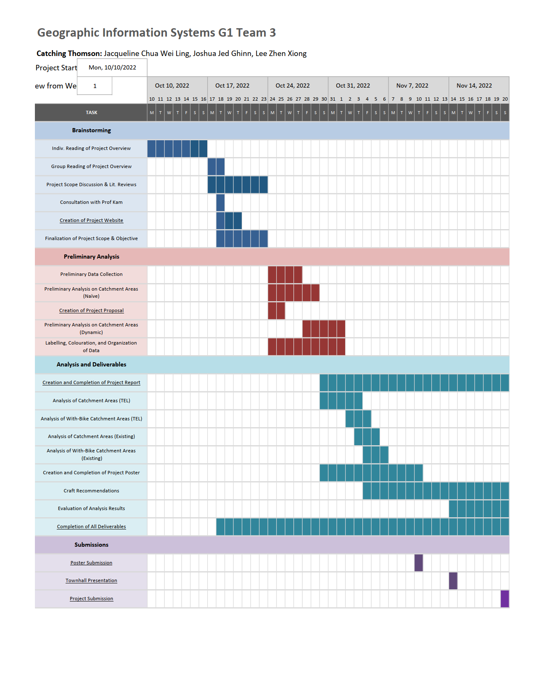

Project Proposal
Motivation
In resource-scarce Singapore, the primary purpose of public transport is to serve residents with efficient forms of mass transportation. Our study goes beyond traditional catchment analysis methods which focus on pedestrian catchment and also consider cycling catchment. This is in line with the LTA 2040 “Walk, Cycle, Ride” Masterplan and the growing popularity of cycling globally. With an estimated public cost of $25 billion and an ever-increasing ridership, it is essential to critically evaluate the full benefits of stage 4 stations along the Thomson East Coast Line (TEL).
Project Objective
- To find out the extent to which the opening of TEL Stage 4 stations will increase accessibility for residences, or for visitors visiting the nearby places of interest
- To make a comparative analysis of the implementation of TEL Stage 4 stations with the implementation of the cycling routes in the same region.
- To identify the limitations of our scope and suggest recommendations for future works
Data
- OpenStreetMaps Data Layers from GeoFabrik
- Road Layers
- Building Layers
- POI Layers
- LTA Data Mall
- Bus Stop Usage
- data.gov.sg
- Bus Stop Locations
- Planning Subzone Boundaries
- Subzone Population
Scope of Work
Thomson East Coast Line Stage 4 Stations (with exception of Founders’ Memorial).
We carried out 2 methods of analysis, by using a circular buffer and network analysis.
Circular Buffer Approach
This is the simplest, yet the most naive method, to deduce the catchment areas. We created a circular 1 km buffer from each station, to find the number of residents in the buffer area, assuming residents are evenly distributed.
Network Analysis
The next approach is based on the network analysis method. Instead of assuming a naive 1 km buffer, our catchment varies between multiple modes of transport along physical pathways or roads. In this case, the modes of transport include cycling in heavy traffic, cycling without heavy traffic, and walking.
Project Schedule
